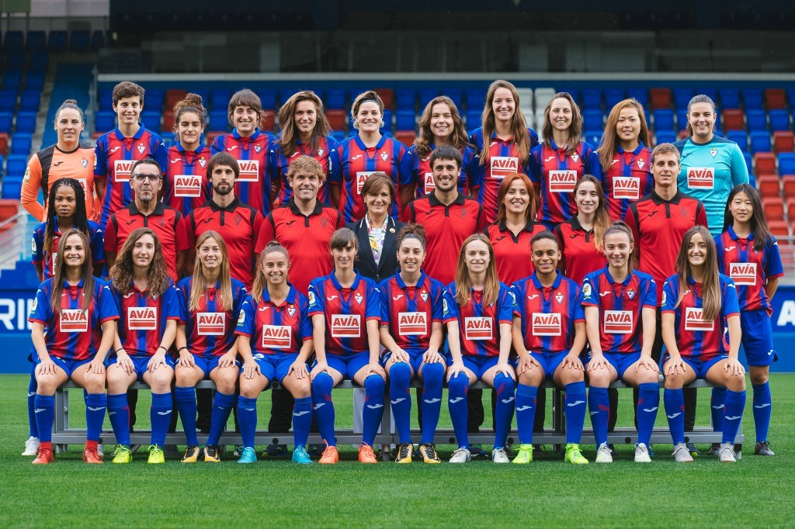
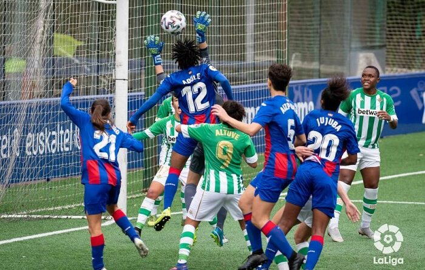
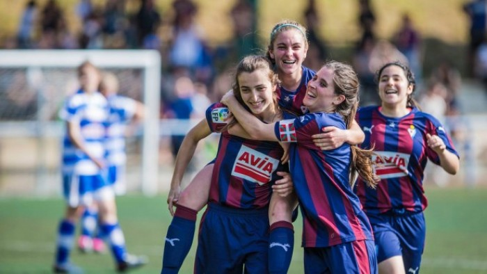

Informació general SD Eibar Femení
La secció de futbol femení de la Societat Esportiva Eibar va ser fundada el 2009. Actualment competeix en la Primera Divisió, primera categoria de el futbol a Espanya, com a Primer Equip Femení de la SD Eibar.
La secció de futbol femení de la Societat Esportiva Eibar va ser fundada el 2009. Actualment competeix en la Primera Divisió, primera categoria de el futbol a Espanya, com a Primer Equip Femení de la SD Eibar.
Els antecedents de el futbol femení a Éibar se situen en l'any 1971, en què un equip format exclusivament per dones va jugar un partit amistós a Ipurúa per recaptar diners a favor de les ikastolas clandestines. El règim de Franco va prohibir la disputa d'aquest partit, adduint que "el futbol no és apropiat per a senyoretes". Les eibarresas, desafiant la prohibició, van jugar i van guanyar el partit.
  